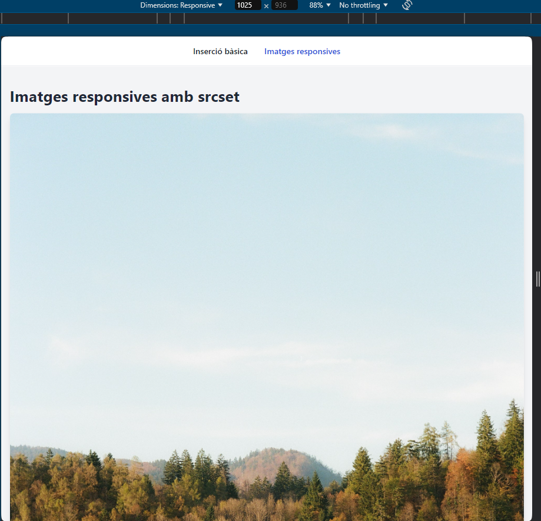
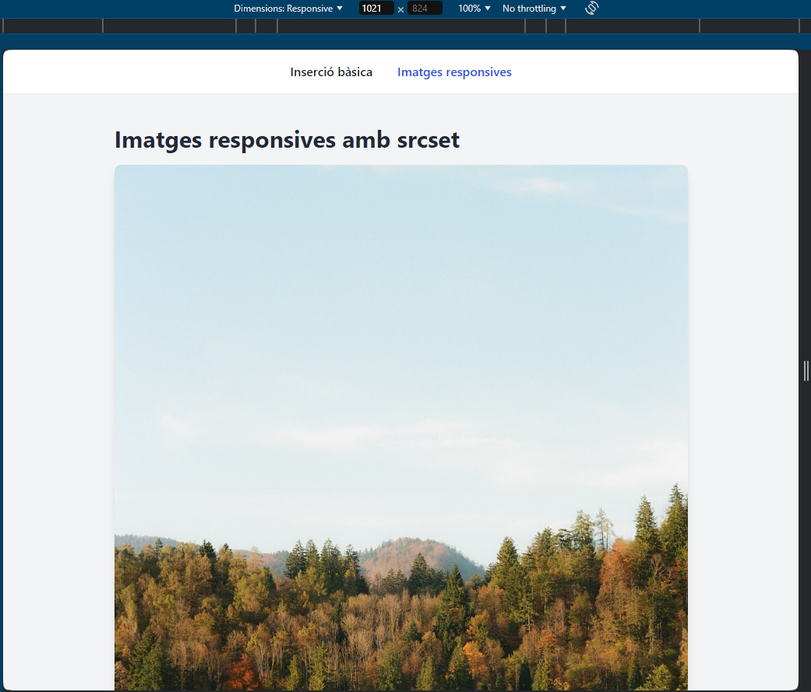

Imatges responsives amb srcset

Més de 1024 px
Menys de 1024 px
A la primera imatge, veiem que ocupa el màxim de l'ample de la pàgina. A la segona imatge, veiem que ocupa un terç de l'ample de la pàgina.
A la primera imatge, veiem que ocupa el màxim de l'ample de la pàgina. A la segona imatge, veiem que ocupa un terç de l'ample de la pàgina.

Podem oferir imatges diferents segons la mida de la pantalla i la resolució de l'usuari. Així que podem oferir la millor imatge possible per a cada situació.